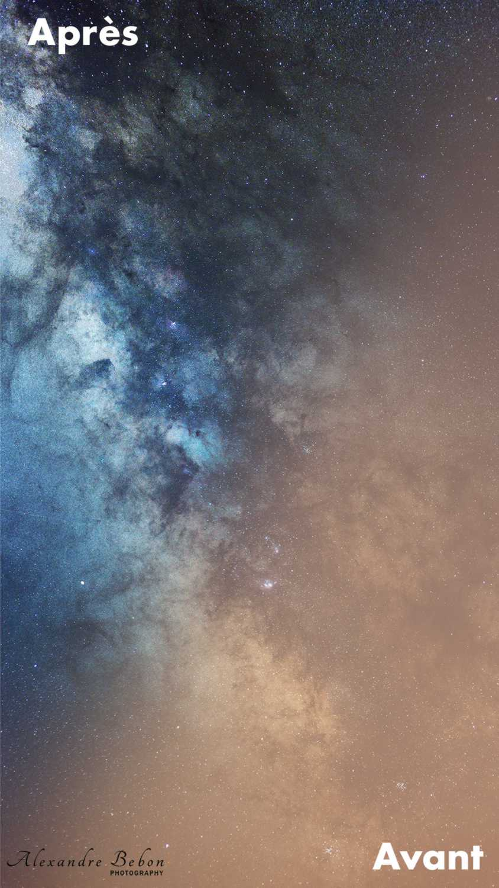

Par la photographie j'aspire à partager mon admiration pour la Nature afin d'éveiller les consciences aux enjeux d'aujourd'hui et de demain. Mon goût pour la liberté et ma curiosité m'emmènent aussi découvrir des lieux insoupçonés en France.
Vous trouverez donc sur ce site ce qui a trait à mes centres d'intéret : photographie animalière, astrophotographie, récits de voyage et projets divers !
L'astrophotographie, c'est l'art de révéler l'invisible. Chaque photo est une ouverture sur notre l'univers, une part de l'infini qui nous entoure.
Vous trouverez sur mon site deux types d'astrophotographies : celles du ciel profond, et celles de paysages nocturnes.
Le ciel profond, ce sont tous les objets qui sont hors du système solaire. Ce sont des nébuleuses ou des galaxies très peu lumineuses, et parfois très éloignées. Certains de ces objets sont visibles à l'oeil nu où avec de petits instruments optiques, comme la nébuleuse d'Orion (M42) ou la galaxie d'Andromède (M31). D'autre sont invisibles à l'oeil sans équipements scientifiques de pointe.
Les paysages nocturnes présentent souvent notre galaxie, La Voie Lactée, avec en premier plan un paysage terrestre.
L'astrophographie a donc pour objectif de révéler des structures célestes très peu lumineuses. En prenant de multiples images et en les traitant de manière à réduire les défauts de l'appareil photo (bruit numérique et thermique, déformation optiques), il est possible de révéler ce qui est invisible à l'oeil nu.
Un équilibre entre l'art et la science
Ma version : couleurs réelles
Certains préférereront un traitement plus rigoureux en respectant les couleurs que percevrait l'oeil humain. C'est le type de photographies que vous trouverez sur mon site. A gauche, vous avez mon image d'un morceau de la nébuleuse de l'Amérique du Nord (NGC 7000), en couleurs réelles, telles que le capteur photo les a captées.
Fausses couleurs
Mais avec des techniques onéreuses de séparation des longueurs d'onde, certains aiment bouleverser la réalité pour obtenir un rendu impressionnant. C'est le cas par exemple des images de la Nasa, qui a d'ailleur créé sa propre correspondance des couleurs avec la palette Hubble. A droite, une version en fausses couleurs de la même zone du ciel.
Des techniques bien particulières

Avant/Après : Voie Lactée 50mm f/2.8, 5x3minutes
Toutes les cibles photographiées sont bien moins lumineuse que n'importe quelle scène diurne. Il faut donc utiliser des temps de pose longs, des grandes ouvertures, et des ISO élevés. Mais bien souvent, les appareils photos montrent leur limite en astrophographie, quelle que soit leur gamme. Il faut alors utiliser des techniques bien spéciales, un peu compliquées à maitriser, mais aux résultats impressionnants. Le but est toujours de réduire le signal parasite (bruit, défauts optiques) pour ne laisser que le signal utile (objet photographié)
D'abord, pour une seule image finale, il faut prendre plusieurs photos (appelées images brutes). La photo finale sera équivalente à une seule image dont le temps de pose est égal à la somme des temps de pose unitaires.
Ensuite il faut prendre plusieurs images totalement noires (appelées des darks), avec le capuchon de l'objectif en place par exemple, avec exactement les mêmes réglages que les images brutes, et à la même température. Cela va permettre, lors du traitement, de construire un modèle des défauts du capteur (bruit thermique et pixels morts), puis de soustraire ces défauts à l'image finale.
Il faut aussi prendre plusieurs images d'une surface claire uniforme (appelées des flats), avec le même réglage d'ouverture que les images brutes. On peut utiliser une feuille blanche hors focus, un ciel dégagé juste avant le lever du soleil, ou un écran avec une image blanche. Ces images vont permettre de constuire un modèle des défauts optiques du système d'imagerie (vignettage et poussières)
Enfin, il faut prendre une série d'images (appelées offsets ou bias) avec le temps d'exposition le plus court possible, le capuchon de l'objectif en place, et les ISO les plus bas. Ces images ne comportent aucun signal, et un bruit supposé minimal. Elles servent à établir un modèle du bruit créé à la lecture de l'image, pour encore une fois le soustraire à l'image. Mais le faible impact du bruit de lecture face aux autres sources de défaut explique que beaucoup négligent cette étape.
Une fois toutes ces images prises, il faut utiliser des algorithmes assez complexes. J'utilise le logiciel SiriL.
Un matériel bien particulier
Monture équatoriale
Les longs temps de pose necessaires rendent mettent à jour une problématique : la terre tourne, et si on pointe un astre à un instant t, celui ci se décale à l'instant t+1. Il faut donc compenser le mouvement de rotation de la terre pour toujours pointer la même direction.
Pour cela, il faut utiliser une monture équatoriale. C'est principalement un axe motorisé, qu'il faut aligner colinéairement à l'axe de rotation de la Terre, et qui pivote à la même vitesse que la Terre mais dans le sens inverse. Le deuxième axe motorisé sert a viser la cible désirée, puis s'immobilise lors du suivi. J'utilise une monture SkyWatcher EQ5 GoTo.
Appareil photo défiltré
La caméra aussi peut être particulière. En effet, les nébuleuses sont constituées en grande partie d'hydrogène alpha ionisé, et émet dans le rouge (656nm). Malheureusement, les capteurs d'appareils photos sont dotés de filtres infrarouges, qui coupent cette longueur d'onde à 80%. Pour exploiter entièrement un reflex en astrophotographie, il faut le défiltrer : enlever ce filtre infrarouge. C'est ce que j'ai fait moi-même sur un Canon 1000D d'occasion. La procédure est plutôt simple mais assez dangeureuse pour le reflex. On peut aussi utiliser des caméras monochrome, parfois refroidie pour limiter le bruit thermique, et reconstituer le spectre du visible avec des filtres de couleurs, ou des filtres à bande passante étroite.
Une haute précision
Les deux axes de la monture équatoriale ne sont pas parfaits, et leur alignement non plus. Quand on utilise une focale assez longue, les défauts deviennent visibles sur les images. Il faut passer au niveau supérieur de précision : l'autoguidage. Une petite lunette et une caméra dédiée, montés en parallèle de l'imageur principal, envoient des images à un ordinateur à intervalles réguliers. Ce dernier calcule le décalage entre deux images consécutives en prenant comme repère une étoile, et envoie à la monture équatoriale la correction necessaire. Ainsi, le suivi est presque parfait. J'utilise pour cela le logiciel Phd2 Guiding et une caméra ZWO ASI 120mm mini sur le viseur Skywatcher d'origine de 50mm d'ouverture .
2.Qu'est-ce-que la photographie animalière ?
L'art de la patience
Le temps s'arrête
La photo animalière, c'est avant tout la contemplation et l'observation sans appareil photo, de cette belle nature qui nous entoure. Combien d'affuts infructueux me faut-il avant d'obtenir une photo d'un animal sauvage !
Certains n'ont pas cette patience et cette passion, et vont dans des parcs animaliers ou utilisent des apats. Ce ne sont pas des méthodes que je cautionne : mon unique but est de ne pas déranger l'équilibre des écosystèmes, de ne provoquer ni dérangement ni dépendance à l'homme, afin de laisser la Nature dans le même état après mon passage.
Tout cela va donc de pair avec une bonne connaissance du terrain et de l'espèce recherchée. Connaître les habitudes, les lieux de passage ou de nourissage, ou encore les terriers, est primordial pour espérer ne pas être ni vu ni senti. Il y a aussi le choix du lieu d'affut qui est important (bien camouflé, avec le vent en face)
Et quand vient le moment de faire la photo, le temps se fige et imprime un souvenir innoubliable, autant sur le capteur que dans mes yeux. Il y a cette satisfaction d'apporter un trophée de cette rencontre. Mais un trophée qui immortalise l'animal, au lieu le détruire irrémédiablement à l'impact létal d'une balle...